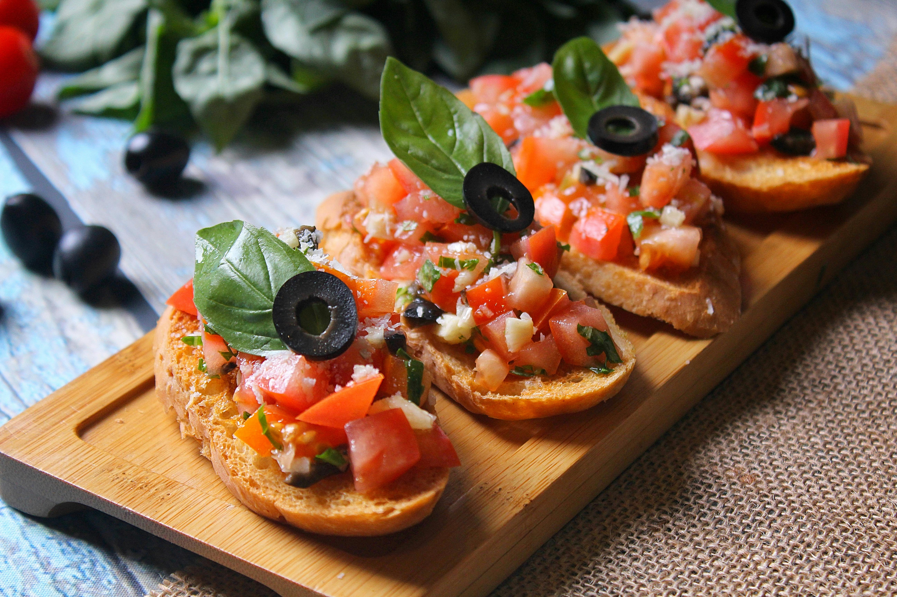

Dishes of the day
A dish in gastronomy is a specific food preparation, a "distinct article or variety of food", ready to eat, or be served.

Bruschetta
Bruschetta from italy consisting of grilled bread rubbed with garlic and topped with olive oil..

Pastas
Pastas is a staple food of traditional Italian cuisine. with the first reference dating to..

Sandwiches
A Sandwiches is a food typically consisting of vegetables, sliced cheese or meat,placed on or between slices of bread...